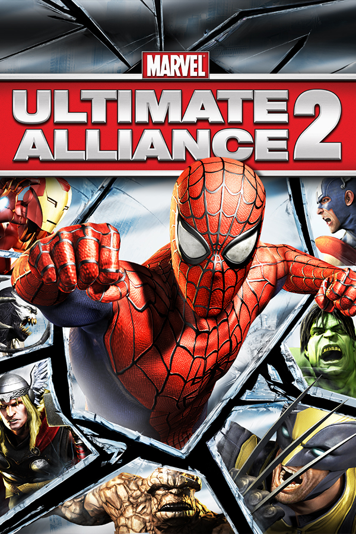

|  | |
| Playtime | Not Played |
| Last Activity | Never |
| Added | 4/27/2025 10:06:45 |
| Modified | 4/29/2025 9:13:18 |
| Completion Status | Not Played |
| Library | Playnite |
| Source | |
| Platform | Sony PlayStation 3 |
| Release Date | 7/26/2016 |
| Community Score | 70 |
| Critic Score | 68 |
| User Score | |
| Genre | Action role-playing |
| Developer | Vicarious Visions Zoë Mode |
| Publisher | Activision |
| Feature | Controller Support Full Controller Support |
| Links | PCGamingWiki HowLongToBeat IGDB SteamDB StrategyWiki MobyGames Wikipedia |
| Tag | Vicarious Visions Alchemy |
Marvel: Ultimate Alliance 2 is a 2009 action role-playing video game featuring characters from Marvel Comics. It is the sequel to 2006's Marvel: Ultimate Alliance, and the second installment in the Marvel: Ultimate Alliance series. The game was jointly developed by Vicarious Visions (PlayStation 3 and Xbox 360), n-Space (Nintendo DS, PlayStation 2 and Nintendo Wii) and Savage Entertainment (PlayStation Portable) and published by Activision in September 2009. A port for the PlayStation 4, Xbox One and Microsoft Windows by Zoë Mode was released in July 2016.
Unlike the first game, which featured an original plot, Ultimate Alliance 2's storyline is mostly based on the Secret War and Civil War story arcs from the Marvel comics. After a series of devastating attacks on the United States, the American government passes the Superhero Registration Act, which forces all super-powered individuals to act under official regulation, in an effort to reduce the chaos that results from their battles. The superhero community is left divided, as some, including Iron Man, support the Act, while others, such as Captain America, oppose it. The two factions quickly find themselves in conflict with each other, all the while a new enemy threatens global peace. The game features two distinct storylines depending on which faction the player selects at the start, which cross over on several instances.
Upon release, Ultimate Alliance 2 received mixed to positive reviews from critics, who generally found it to be inferior to its predecessor. The game was praised for its branching narrative, improved writing and replay value, and new additions to the character roster, but criticized for the absence of certain elements from the first game (which "oversimplified" the gameplay, according to some critics and players)[citation needed]. After almost ten years without a new entry in the Marvel: Ultimate Alliance series, a reboot, Marvel Ultimate Alliance 3: The Black Order, was released in July 2019 by Nintendo, without the involvement of Activision (whose license to publish Marvel games expired in 2014).
Marvel Ultimate Alliance 2 borrows much of its gameplay from its predecessor. The game allows players to select a team of four given characters from a larger pool of heroes and villains; team members are interchangeable and may be swapped during gameplay. General gameplay mechanics are similar to those of the X-Men Legends series. The game is played from an isometric dungeon crawl perspective, supporting up to four players simultaneously. The Vicarious Visions version on PlayStation 3, PlayStation 4, Xbox 360, Xbox One and PC consoles of the game also features online play via the PlayStation Network, Xbox Live, and Windows Live/Steam respectively.
The power system also has been improved, allowing two characters to combine powers, yielding a new attack, known as a "fusion". Each playable character in the game has a unique fusion with every other playable character in the game. An example is Captain America using his shield to reflect Storm's lightning bolts. Players have the ability to level up characters and earn new abilities and powers.
The Vicarious Visions version on PS3, 360, PS4, Xbox One and PC consoles features an updated character progression system, with each character having four core powers that evolve as the character levels up similar to original X-Men Legends. The n-Space version on Nintendo DS, Nintendo Wii, PlayStation 2, and PlayStation Portable consoles of the game resembles the character progression system found in the original Marvel: Ultimate Alliance and original X-Men Legends, except the power set numbers are different, whereas the Nintendo DS version's power set number is limited to 4 powers limited like in the original X-Men Legends. While the Vicarious Visions version have an alternate costume that requires to be unlocked through defeating multiple enemies in specific conditions, n-space version does not feature an alternate costume selection.
The game begins with a military operation in Latveria, home of the supervillain Doctor Doom. "The story starts with Secret War. We're using Nick Fury's invasion of Latveria as a jumping off point. The rest of the story is derived from the consequences of those actions", stated Dan Tanguay, creative director for Vicarious Visions.
The game then follows the Civil War story arc: a fight between heroes and villains causes an explosion in Stamford, Connecticut, killing 612 civilians (including a number of school children). The government labels the incident "super powered negligence", and the public demand a Superhuman Registration Act. The government passes the act, and all meta-humans are forced to adhere to or disobey the law. In the game, players are able to choose between the Pro-Registration side, headed by Iron Man and Mister Fantastic, or the Anti-Registration side, headed by Captain America and Luke Cage. These characters and several other characters are 'locked' into a specific side during the game's second act but can be used on either side during repeat playthroughs. Two different endings are available, determined by the side chosen at the beginning of the game. Tanguay stated that the story follows into the aftermath of the Civil War.
Nick Fury leads a team of superheroes on an unsanctioned attack on Castle Doom in Latveria after discovering that the newly elected prime minister, Lucia von Bardas, has been supplying weapons to the Tinkerer, who in turn sells them to supervillains. After the defeats of her forces, Castle Doom is destroyed in an explosion, with Von Bardas assumed dead. One year later, Von Bardas returns as a cyborg and joins forces with several villains to destroy New York City as revenge for the attack on Latveria. The heroes defeat Von Bardas, but the destruction and Fury's unlawful actions cause the U.S. government to consider the Superhuman Registration Act (SRA). In light of this incident, Fury disappears and Maria Hill is sworn in as the new Director of S.H.I.E.L.D., while Iron Man begins lobbying against the act in Washington, D.C.
Three days later during a telecast of The New Warriors, Nitro kills over 600 civilians in Stamford, Connecticut, prompting the SRA's immediate passage as Iron Man changes his stance on it. Opposing the act, Captain America goes underground, along with several other superheroes (chiefly among them Luke Cage and Iron Fist) and S.H.I.E.L.D agents who form a group called "The White Star". In response, the Pro-Registration group, led by Iron Man and Mister Fantastic, develops nanite technology and use it to mind control several supervillains to increase their ranks, including a new formation of the Thunderbolts. At this point, the player is given the ability to side with Anti-Registration or Pro-Registration factions; the missions and boss encounters during the following chapters differ based on which side the player chooses. The two sides have several skirmishes, including a Pro-Registration raid on a White Star base, and an Anti-Registration attack on a prison convoy carrying their allies.
When the Anti-Registration heroes respond to a hostage situation at a Stark Industries chemical plant, Iron Man appears and reveals it to have been a hoax. He attempts to negotiate with Captain America, promising amnesty, but Captain America refuses and a battle ensues between the two factions. The nanite-controlled villains go haywire and attack the agents they were programmed to help, stealing explosives to destroy the facility. Disguised as one of the agents, Fury enlists the help of a group of heroes to disarm the bombs, but before he can disarm the final one, he is attacked by Venom. The explosion wounds the heroes and seemingly kills Fury, but he is revealed to be a Life Model Decoy. The real Fury saves the injured heroes and takes them to his hideout, where he has recruited the Tinkerer to help discover the malfunction's cause. To obtain a sample of the nanite formula, the group travels to Prison 42 in the Negative Zone, where most of the captured heroes and villains are held. They collect the samples and Fury activates the prison's self-destruct system to prevent the nanites' spread but does not escape with the others; he and several other heroes are presumed dead.
The heroes learn the nanites survived and have now spread worldwide, causing the SRA's temporary suspension to combat the threat. A group of heroes travels to Wakanda, where they help Black Panther and the Dora Milaje defend the country from nanite agents, now under the moniker of "The Fold." Establishing a temporary base in Wakanda, they develop a cure and learn that Fury survived, now under the Fold's control. The heroes infiltrate a base in Iceland to broadcast a nanite stasis signal that will paralyze those in the Fold's control, allowing them to be cured. At the culmination of their mission, the heroes face off against Tinkerer, revealed to be the Fold's creator, and a nanite-controlled Nick Fury enhanced with numerous superpowers. After defeating Fury, everyone is freed from the nanites, and Fury receives a presidential pardon.
The game's ending depends on which side the player chose. In the Anti-Registration ending, Congress repeals the Superhero Registration Act and the President pardons the Anti-Registration heroes. In the Pro-Registration ending, Congress amends the Superhero Registration Act, making it voluntary, and Iron Man becomes the new Director of S.H.I.E.L.D.
The game includes some format-specific characters, with additional characters released as downloadable content. In addition, each character on the PS3 and Xbox 360 versions has one alternate costume that can be unlocked during the course of the game. Stan Lee, co-creator of Marvel Comics and creator of many of the characters, also lends his likeness and voice to New York Senator Lieber; this marks the first time Stan has made a physical cameo in a video game. On April 1, 2009, Aunt May was announced to be a playable character on the official website as part of an April Fool's joke.
Several playable characters also appear as bosses throughout the game, such as battling Iron Man if the player chooses the Anti-Registration path, or facing Captain America on the Pro-Registration path. Other playable characters are unlocked by defeating them, such as Deadpool, Green Goblin and Venom.
Juggernaut was available as a pre-order bonus incentive for the PlayStation 3 and Xbox 360 versions. A patch was released to allow those who do not have Juggernaut installed to play with others who have the character. On October 9, 2009, downloadable content was announced for the PlayStation 3 and Xbox 360 versions, which included new characters and comic missions, as well as new achievements. It was released on November 5, 2009, for PlayStation 3 and Xbox 360. Additionally the once pre-order exclusive character Juggernaut was available for $1.99/160MSP. The content was removed from both networks on December 31, 2009, with Activision claiming the content was "a limited time offer". On July 1, 2010, Activision re-released the DLC on Xbox Live and the PlayStation Network shortly thereafter, at Xbox Live where it was released on July 3, 2010, and at PlayStation Network where it was released on July 20, 2010. Players could purchase both the five-character DLC pack and the Juggernaut pre-order character for the same cost previously mentioned. Activision, however, stipulated that the content would only be available until December 31, 2010. The expansion packs returned to the European PlayStation Network in January 2012, but were not added back to Xbox Live. In January 2014, the packs were removed once again from the PlayStation Network. As the 2016 re-release is based on the Vicarious Visions versions, it includes all downloadable content by default.
The game was officially announced in a press release by Activision on February 8, 2008. MUA2 was released on September 15, 2009. At E3 2008, it was given the official name of Marvel: Ultimate Alliance 2: Fusion, which would later be shortened to Marvel: Ultimate Alliance 2. On February 5, 2009, a new trailer was released, revealing that the story would continue from the Secret War saga into Marvel Comic's Civil War. Three days later, the game was featured at New York Comic Con, where players were able to take green screen pictures and have themselves superimposed into the game's backdrops.
Vicarious Visions, developers for the PlayStation 3 and Xbox 360 versions, upgraded the Alchemy engine in several ways, including adding Havok physics technology, a new 3D sound system, and lip-syncing. Vicarious Visions also had a development blog which began on February 6, 2009 and which is updated bi-monthly. Users could follow Vicarious Visions' creative director Dan Tanguay and executive producer Jennifer Oneal on Twitter as they answered questions and posted news about MUA2.
The Nintendo DS, PlayStation 2 and Nintendo Wii versions were developed by n-Space, with Savage Entertainment porting the PS2 version to the PSP. Version 3.5 of the Alchemy engine was used, and a team of around thirty developers worked approximately thirteen months to develop the game. Online multiplayer for the Wii is not supported due to time constraints during development. Several changes were made to the next-gen versions of MUA2 late during n-Space's development, accounting for the fact that Stan Lee does not cameo in these versions, that there are no alternate costumes, nor on-the-fly character swapping. n-Space created a series of articles to address fan concerns, the "perceived shortcoming[s]" of the game, and to answer questions. The Wii version of the game used WiiConnect24 to implement a feature known as B.R.A.G. (Broadcast Realtime Accomplishment Gloating), which allows players to share level results and high scores, and also features extensive use of the Wii remote for puzzles and manning turrets. Users could also follow n-Space president and founder Dan O'Leary via Twitter to receive updates on the game.
In 2020, the multiplayer servers for Marvel Ultimate Alliance 2 were shut down.
The PlayStation 3 and Xbox 360 versions of Marvel: Ultimate Alliance 2 have received positive reviews from most critics, and Metacritic currently holds the game at 74/100 for the PlayStation 3 and 73/100 for the Xbox 360. Brian Michael Bendis, writer for Marvel Comics, was given an early opportunity to play the game, to which he later tweeted: "Happy to give a huge thumbs up for 'Ultimate Alliance 2.' The stills do it no justice. It's gorgeous". The Nintendo DS and Wii fared much poorer, holding 65/100 and 50/100 for their respective platforms.
GameSpot's Kevin VanOrd stated that the game delivers "the button-mashing, power-flinging, over-the-top action fans of the original would expect", additionally praising the branched story and unlockables, citing additional replay value. However, the reviewer cited "technical oddities" and said that the "RPG elements were stripped down". 1Up.com's Thierry Nguyen was more critical, saying that the game was "like Ben Reilly: almost, but not quite as good as the original", citing issues with alternate costumes that "seem pretty lame", "a persistent feeling of oversimplification" and that a hope that "either Raven returns as the developer or Vicarious Visions learns from its missteps". He did however praise a "more coherent story", new fusion abilities, and gameplay tweaks. IGN's Greg Miller gave the game a 7.7 /10, praising its new fusions and "healthy cast" but criticizing the game's similar gameplay to its predecessor, inconsistent voice acting, and its weak CG cutscenes.
During the 13th Annual Interactive Achievement Awards, Marvel: Ultimate Alliance 2 received a nomination for "Outstanding Achievement in Adapted Story" by the Academy of Interactive Arts & Sciences.
According to the NPD sales group the Xbox 360 version of Marvel: Ultimate Alliance 2 was seventh in sales for September 2009, selling 236,000 units. However, the sales dropped in October 2009, with the game no longer listed in the top ten in sales.
On December 6, 2018, a third game was announced in the Ultimate Alliance franchise titled Marvel Ultimate Alliance 3: The Black Order. Unlike the previous games which were released on multiple consoles, this installment is published by Nintendo as a Nintendo Switch exclusive. The game features a team of heroes uniting to prevent Thanos and the Black Order from obtaining the Infinity Stones.